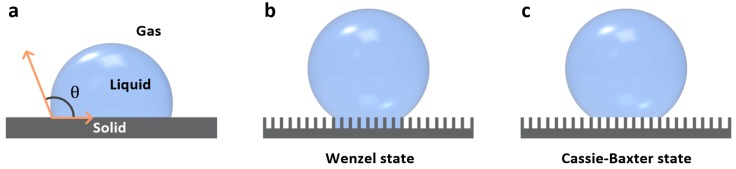

Background
This review surveys the chemistry, structures and fabrication of bio-inspired surfaces that strongly attract or repel liquids. It explores their use in biomedical devices and high-throughput cell culture.
What the review covers
This review connects surface chemistry and structure for extreme wetting with biomedical devices and high-throughput cell culture.
It brings fabrication principles and applications together; performance claims for individual materials need their original studies.

The review schematic compares droplet contact on a flat surface and in the Wenzel and Cassie–Baxter wetting states.
Sera Shin, Jungmok Seo, Heetak Han et al.. “Bio-Inspired Extreme Wetting Surfaces for Biomedical Applications”. Figure 2. DOI: 10.3390/ma9020116. CC BY 4.0. Figure content is unchanged.
Source figure and caption ↗ · DOI: 10.3390/ma9020116 ↗ · CC BY 4.0 ↗
Questions and limits
A question for further study is under which biological-fluid and cell-contact conditions liquid repellency persists.
How to compare the results
Consider fluid composition, adhesion history, surface microstructure and biological endpoint alongside contact angle.
Related reading
Bioinspired self-repairing slippery surfaces with pressure-stable omniphobicity
Slippery liquid-infused porous surfaces (SLIPS) provide a retained-lubricant example for comparing the wetting designs discussed in the review.
SLIPS results do not validate every biomedical application covered by the review.
Abstract-based introductionRESEARCH NEWS
Research in the news
Sources used in this summary
This summary draws on the main text and original figures. Supplementary materials and underlying data have not been independently reviewed in full. Individual cited studies and their supplements were not independently reviewed in full.